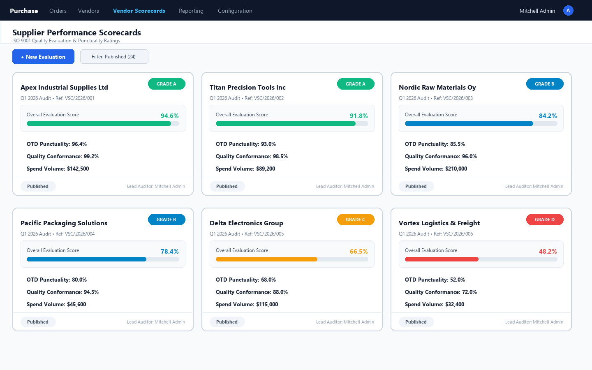
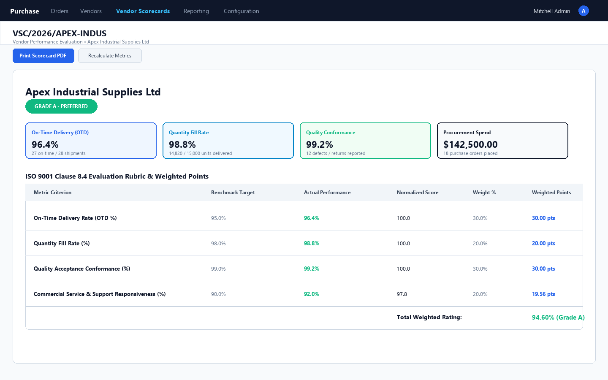
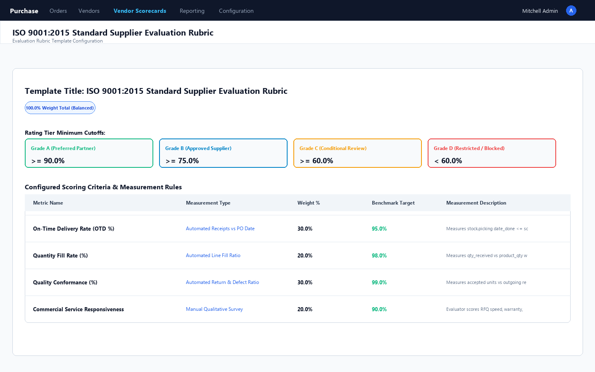
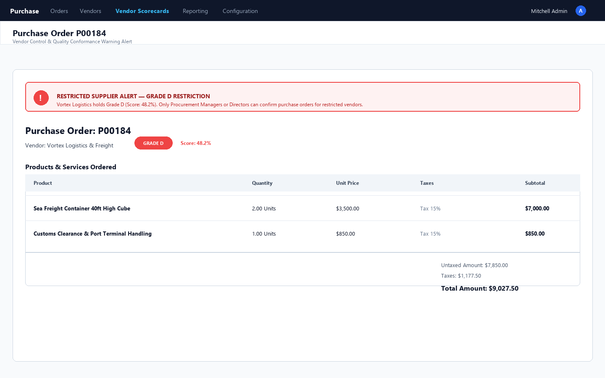
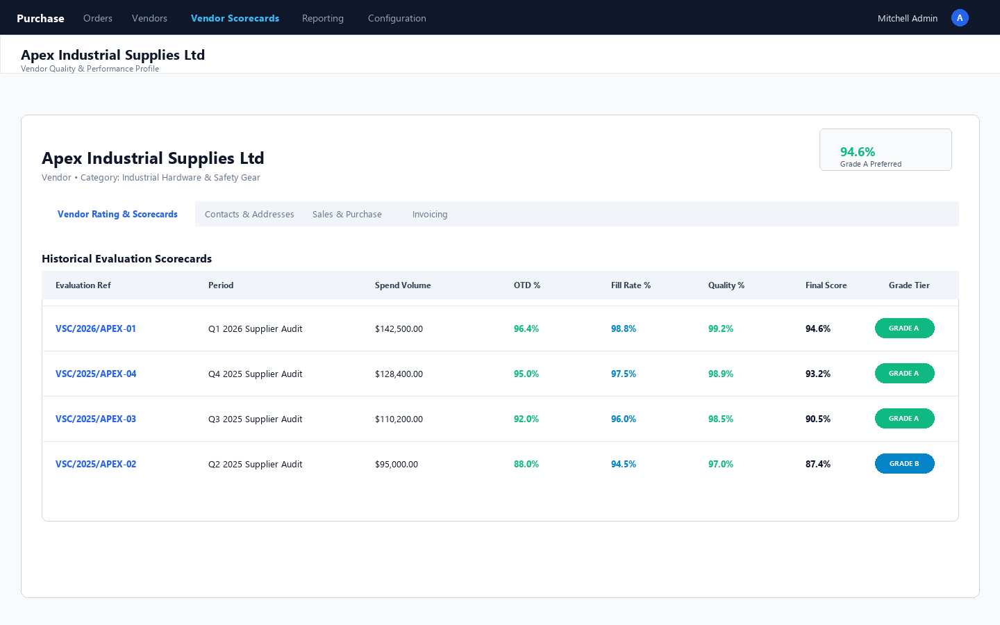
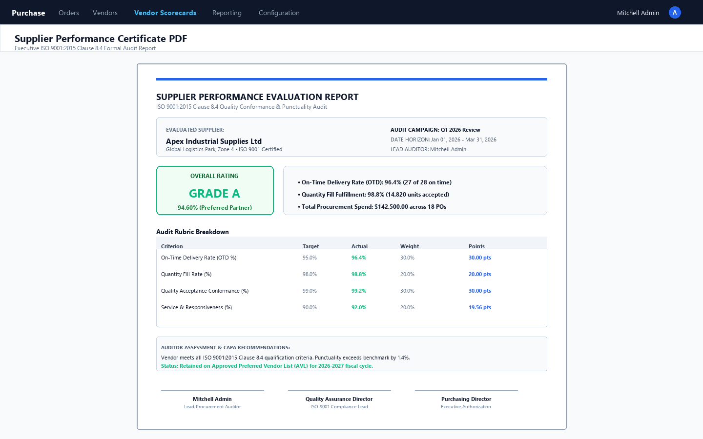

Automated On-Time Delivery (OTD), Quantity Fill Rate, Quality Conformance & ISO 9001:2015 Clause 8.4 Rating Rubric for Odoo Community.
Without objective vendor ratings, companies suffer from frequent supply chain disruptions, late shipments, defective materials, and failed ISO 9001:2015 Clause 8.4 ("Control of externally provided processes, products and services") audits. Vendor Scorecard & Supplier Performance Hub gives Odoo Community an enterprise-grade evaluation engine that automatically scores vendors into Grade A (Preferred), Grade B (Approved), Grade C (Conditional), and Grade D (Restricted/Blocked), complete with automated PO alerts and formal executive PDF certificates.
Complete supplier lifecycle governance from RFQ punctuality to periodic audit sign-off
Compares actual stock receipt delivery dates (stock.picking.date_done) against committed scheduled dates. Zero manual entry required.
Automatically calculates accepted material units versus returned or defective items across warehouse return pickings. Conformance score adjusts instantly.
Audits delivered units against original purchase order line quantities. Detects recurring under-shipments, partial backorders, and split logistics.
Configure customizable scoring templates with weighted criteria (e.g., 30% OTD, 30% Quality, 20% Fill, 20% Service Responsiveness) to satisfy ISO 9001 audits.
Displays warning banners directly on Purchase Orders for Grade C vendors, and enforces mandatory Procurement Manager authorization before PO confirmation for Grade D vendors.
Generate 1-click printable formal supplier performance certificates with grade badges, rubric points breakdown, CAPA action plans, and 3-sign-off signature lines.
See how seamlessly the evaluation engine integrates into your standard procurement workflows
Monitor all active suppliers at a glance with color-coded Grade Badges (Grade A/B/C/D), overall progress bars, OTD rates, quality percentages, and total annual spend volume.

Detailed evaluation workbench featuring executive stat boxes for OTD, Fill Rate, and Conformance alongside an automated weighted points breakdown table.

Define multiple scoring templates with customizable weight distributions and minimum cutoff percentages for Grade A, B, and C supplier tiers.

Prevents procurement errors before purchase orders are confirmed. Grade badges are prominently displayed next to the vendor name, with warning alerts for restricted suppliers.

One-click access to the supplier's full evaluation history right from the partner form view, tracking performance improvements over quarters and fiscal years.

Generate formal, printable 3-signature evaluation reports for external ISO auditors, supplier business reviews, or annual vendor qualification files.

| Procurement & Quality Feature | Standard Odoo Community | Vendor Scorecard Hub |
|---|---|---|
| Automated On-Time Delivery (OTD %) Tracking | ✗ No automated metric | ✓ Auto-computed from stock receipts |
| Quality Conformance & Return Rate (%) | ✗ Not tracked | ✓ Auto-computed from return pickings |
| ISO 9001:2015 Clause 8.4 Evaluation Rubrics | ✗ External spreadsheets | ✓ Built-in customizable weighted rubrics |
| Supplier Rating Tiers (Grade A / B / C / D) | ✗ None | ✓ Automated tier assignment & badges |
| Purchase Order Risk Warning & Approval Block | ✗ POs created without warning | ✓ Grade C warning & Grade D confirmation shield |
| Formal 3-Signature Audit Certificate PDF | ✗ Not available | ✓ Printable executive audit report |
Follow these 7 simple steps in your Odoo database to verify the complete supplier evaluation lifecycle.
Navigate to Purchase > Configuration > Scoring Templates. Open the pre-loaded ISO 9001:2015 Standard Supplier Evaluation Rubric. Review the 4 pre-configured criteria: On-Time Delivery (30%), Fill Rate (20%), Quality Conformance (30%), and Service Support (20%) summing to 100%, alongside Grade cutoffs (Grade A ≥ 90%, Grade B ≥ 75%, Grade C ≥ 60%, Grade D < 60%).
Go to Purchase > Orders > Purchase Orders > New. Choose an active supplier (e.g. Apex Industrial Supplies), add products with quantities and prices, and click Confirm Order. Open the receipt in Inventory and click Validate. The system records the committed scheduled date and actual done date.
Navigate to Purchase > Vendor Scorecards > Evaluation Campaigns > New. Name the campaign (e.g. Q1 Supplier Review), set the date range covering today's PO, and select the ISO 9001 template. Click Start Campaign, then click Compute All Vendor Scores. The engine automatically scans all completed receipts and POs to generate scorecards!
Open the generated scorecard. Notice how OTD Rate (%), Quantity Fill Rate (%), and Quality Conformance (%) are auto-computed directly from stock pickings. In the Qualitative Audit & Service tab, rate vendor responsiveness (e.g. 95/100) and observe the weighted overall score update live.
On the Scorecard header, click Mark Reviewed > Approve Scorecard > Publish Rating. Now open the supplier form under Purchase > Orders > Vendors. You will see their new official Grade Badge and score in both the header smart button and the Vendor Rating & Scorecard historical tab!
Test the risk controls: for any supplier with Grade C or Grade D (Restricted/Blacklisted), create a new PO. Notice the amber/red alert banner warning the procurement team. When confirming an order for a Grade D supplier, regular users are blocked unless approved by a Procurement Manager!
On any published Scorecard, click Print Evaluation PDF. Odoo generates a formal executive audit report with company logo, supplier details, rating grade ribbon, KPI stat boxes, full rubric points table, CAPA plan, and 3 formal sign-off signature lines.
Our certified Odoo engineers offer free installation guidance, version migration, and custom scoring metric development for specialized industries.